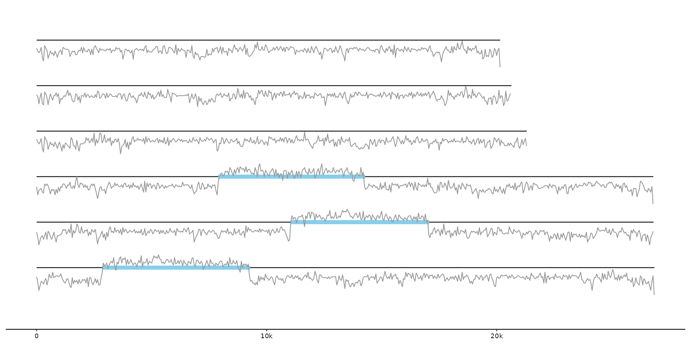

Track selection works like dplyr::pull() and supports unquoted ids and
positional arguments. ... can be used to subset the data in
dplyr::filter() fashion. pull-prefixed variants return the specified
track from a gggenome object. Unprefixed variants work inside geom_* calls.
feats(.track_id = 1, ..., .ignore = "genes", .geneify = FALSE) genes(..., .gene_types = c("CDS", "mRNA", "tRNA", "tmRNA", "ncRNA", "rRNA")) links(.track_id = 1, ..., .ignore = NULL, .adjacent_only = TRUE) seqs(...) bins(..., .group = vars()) track(.track_id = 1, ..., .track_type = NULL, .ignore = NULL) pull_feats(.x, .track_id = 1, ..., .ignore = "genes", .geneify = FALSE) pull_genes( .x, ..., .gene_types = c("CDS", "mRNA", "tRNA", "tmRNA", "ncRNA", "rRNA") ) pull_links(.x, .track_id = 1, ..., .ignore = NULL, .adjacent_only = TRUE) pull_seqs(.x, ...) pull_bins(.x, ..., .group = vars()) # S3 method for gggenomes_layout pull_bins(.x, ..., .group = vars()) pull_track(.x, .track_id = 1, ..., .track_type = NULL, .ignore = NULL)
| .track_id | The track to pull out, either as a literal variable name or as a positive/negative integer giving the position from the left/right. |
|---|---|
| ... | Logical predicates passed on to dplyr::filter. "seqs", "feats", "links". Affects position-based selection. |
| .ignore | track names to ignore when selecting by position. |
| .geneify | add dummy type, introns and geom_id column to play nicely with geoms supporting multi-level and spliced gene models. |
| .gene_types | return only feats of this type ( |
| .adjacent_only | filter for links connecting direct neighbors
( |
| .group | what variables to use in grouping of bins from seqs in addition
to |
| .track_type | restrict to these types of tracks - any combination of "seqs", "feats", "links". |
| .x | A gggenomes or gggenomes_layout object. |
feats: by default pulls out the first feat track not named
"genes".
genes: pulls out the first feat track (genes), filtering
for records with type=="CDS", and adding a dummy gene_id column if missing
to play nice with multi-exon geoms.
links: by default pulls out the first link track.
seqs: pulls out the seqs track (there is only one).
bins: pulls out a binwise summary table of the seqs data powering
geom_bin_*() calls. The bin table is not a real track, but recomputed
on-the-fly.
track: pulls from all tracks in order seqs, feats, links.
gg <- gggenomes(emale_genes, emale_seqs, emale_tirs, emale_ava) gg %>% track_info() # info about track ids, positions and types#> # A tibble: 4 × 4 #> # Groups: type [3] #> id type i n #> <chr> <chr> <int> <int> #> 1 seqs seqs 1 6 #> 2 genes feats 1 143 #> 3 feats feats 2 12 #> 4 links links 1 38# get first feat track that isn't "genes" (all equivalent) gg %>% pull_feats() # easiest#> # A tibble: 12 × 20 #> y x xend bin_id seq_id start end file_id strand type feat_id #> <int> <dbl> <dbl> <chr> <chr> <int> <int> <chr> <chr> <chr> <chr> #> 1 2 0 473 BVI_008A BVI_0… 1 473 emales… + repe… BVI_00… #> 2 2 26820 26347 BVI_008A BVI_0… 26348 26820 emales… - repe… BVI_00… #> 3 3 0 488 BVI_069 BVI_0… 1 488 emales… + repe… BVI_06… #> 4 3 26808 26320 BVI_069 BVI_0… 26321 26808 emales… - repe… BVI_06… #> 5 4 0 1081 Cflag_017B Cflag… 1 1081 emales… + repe… Cflag_… #> 6 4 21311 20230 Cflag_017B Cflag… 20231 21311 emales… - repe… Cflag_… #> 7 5 0 319 E4-10_086 E4-10… 1 319 emales… + repe… E4-10_… #> 8 5 20642 20323 E4-10_086 E4-10… 20324 20642 emales… - repe… E4-10_… #> 9 1 0 458 E4-10_112 E4-10… 1 458 emales… + repe… E4-10_… #> 10 1 26856 26398 E4-10_112 E4-10… 26399 26856 emales… - repe… E4-10_… #> 11 6 0 454 RCC970_016B RCC97… 1 454 emales… + repe… RCC970… #> 12 6 20152 19698 RCC970_016B RCC97… 19699 20152 emales… - repe… RCC970… #> # … with 9 more variables: introns <list>, parent_ids <list>, source <chr>, #> # score <chr>, phase <int>, name <chr>, width <chr>, geom_id <chr>, #> # .marginal <lgl>gg %>% pull_feats(feats) # by id#> # A tibble: 12 × 20 #> y x xend bin_id seq_id start end file_id strand type feat_id #> <int> <dbl> <dbl> <chr> <chr> <int> <int> <chr> <chr> <chr> <chr> #> 1 2 0 473 BVI_008A BVI_0… 1 473 emales… + repe… BVI_00… #> 2 2 26820 26347 BVI_008A BVI_0… 26348 26820 emales… - repe… BVI_00… #> 3 3 0 488 BVI_069 BVI_0… 1 488 emales… + repe… BVI_06… #> 4 3 26808 26320 BVI_069 BVI_0… 26321 26808 emales… - repe… BVI_06… #> 5 4 0 1081 Cflag_017B Cflag… 1 1081 emales… + repe… Cflag_… #> 6 4 21311 20230 Cflag_017B Cflag… 20231 21311 emales… - repe… Cflag_… #> 7 5 0 319 E4-10_086 E4-10… 1 319 emales… + repe… E4-10_… #> 8 5 20642 20323 E4-10_086 E4-10… 20324 20642 emales… - repe… E4-10_… #> 9 1 0 458 E4-10_112 E4-10… 1 458 emales… + repe… E4-10_… #> 10 1 26856 26398 E4-10_112 E4-10… 26399 26856 emales… - repe… E4-10_… #> 11 6 0 454 RCC970_016B RCC97… 1 454 emales… + repe… RCC970… #> 12 6 20152 19698 RCC970_016B RCC97… 19699 20152 emales… - repe… RCC970… #> # … with 9 more variables: introns <list>, parent_ids <list>, source <chr>, #> # score <chr>, phase <int>, name <chr>, width <chr>, geom_id <chr>, #> # .marginal <lgl>gg %>% pull_feats(1) # by position#> # A tibble: 12 × 20 #> y x xend bin_id seq_id start end file_id strand type feat_id #> <int> <dbl> <dbl> <chr> <chr> <int> <int> <chr> <chr> <chr> <chr> #> 1 2 0 473 BVI_008A BVI_0… 1 473 emales… + repe… BVI_00… #> 2 2 26820 26347 BVI_008A BVI_0… 26348 26820 emales… - repe… BVI_00… #> 3 3 0 488 BVI_069 BVI_0… 1 488 emales… + repe… BVI_06… #> 4 3 26808 26320 BVI_069 BVI_0… 26321 26808 emales… - repe… BVI_06… #> 5 4 0 1081 Cflag_017B Cflag… 1 1081 emales… + repe… Cflag_… #> 6 4 21311 20230 Cflag_017B Cflag… 20231 21311 emales… - repe… Cflag_… #> 7 5 0 319 E4-10_086 E4-10… 1 319 emales… + repe… E4-10_… #> 8 5 20642 20323 E4-10_086 E4-10… 20324 20642 emales… - repe… E4-10_… #> 9 1 0 458 E4-10_112 E4-10… 1 458 emales… + repe… E4-10_… #> 10 1 26856 26398 E4-10_112 E4-10… 26399 26856 emales… - repe… E4-10_… #> 11 6 0 454 RCC970_016B RCC97… 1 454 emales… + repe… RCC970… #> 12 6 20152 19698 RCC970_016B RCC97… 19699 20152 emales… - repe… RCC970… #> # … with 9 more variables: introns <list>, parent_ids <list>, source <chr>, #> # score <chr>, phase <int>, name <chr>, width <chr>, geom_id <chr>, #> # .marginal <lgl>gg %>% pull_feats(2, .ignore=NULL) # default .ignore="genes"#> # A tibble: 12 × 20 #> y x xend bin_id seq_id start end file_id strand type feat_id #> <int> <dbl> <dbl> <chr> <chr> <int> <int> <chr> <chr> <chr> <chr> #> 1 2 0 473 BVI_008A BVI_0… 1 473 emales… + repe… BVI_00… #> 2 2 26820 26347 BVI_008A BVI_0… 26348 26820 emales… - repe… BVI_00… #> 3 3 0 488 BVI_069 BVI_0… 1 488 emales… + repe… BVI_06… #> 4 3 26808 26320 BVI_069 BVI_0… 26321 26808 emales… - repe… BVI_06… #> 5 4 0 1081 Cflag_017B Cflag… 1 1081 emales… + repe… Cflag_… #> 6 4 21311 20230 Cflag_017B Cflag… 20231 21311 emales… - repe… Cflag_… #> 7 5 0 319 E4-10_086 E4-10… 1 319 emales… + repe… E4-10_… #> 8 5 20642 20323 E4-10_086 E4-10… 20324 20642 emales… - repe… E4-10_… #> 9 1 0 458 E4-10_112 E4-10… 1 458 emales… + repe… E4-10_… #> 10 1 26856 26398 E4-10_112 E4-10… 26399 26856 emales… - repe… E4-10_… #> 11 6 0 454 RCC970_016B RCC97… 1 454 emales… + repe… RCC970… #> 12 6 20152 19698 RCC970_016B RCC97… 19699 20152 emales… - repe… RCC970… #> # … with 9 more variables: introns <list>, parent_ids <list>, source <chr>, #> # score <chr>, phase <int>, name <chr>, width <chr>, geom_id <chr>, #> # .marginal <lgl># get "seqs" track (always track #1) gg %>% pull_seqs()#> # A tibble: 6 × 12 #> # Groups: bin_id [6] #> y x xend strand seq_id bin_id length bin_offset start end file_id #> <int> <dbl> <dbl> <chr> <chr> <chr> <int> <dbl> <dbl> <int> <chr> #> 1 6 0 20152 + RCC970… RCC970… 20152 0 1 20152 emales #> 2 5 0 20642 + E4-10_… E4-10_… 20642 0 1 20642 emales #> 3 4 0 21311 + Cflag_… Cflag_… 21311 0 1 21311 emales #> 4 3 0 26808 + BVI_069 BVI_069 26808 0 1 26808 emales #> 5 2 0 26820 + BVI_00… BVI_00… 26820 0 1 26820 emales #> 6 1 0 26856 + E4-10_… E4-10_… 26856 0 1 26856 emales #> # … with 1 more variable: seq_desc <chr># plot integrated transposons and GC content for some viral genomes gg <- gggenomes(seqs=emale_seqs, feats=list(emale_ngaros, GC=emale_gc)) gg + geom_seq() + geom_feat(color="skyblue") + # defaults to data=feats() geom_line(aes(x, y+score-.6, group=y), data=feats(GC), color="gray60")